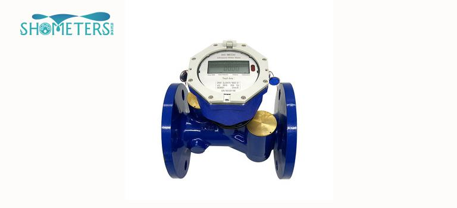

E-mail:
info@sh-meters.comCall Us:
+86 13131984716With the increasing application of ultrasonic water meters, we can see that it has been used not only for domestic water metering, but also for agricultural and industrial water metering. What are the application advantages of ultrasonic water meters?
The advantages of ultrasonic water meters in agricultural water use are:
(1) Because there are no mechanical moving parts, no wear, and long service life, ultrasonic water meter measurement is almost unaffected by water quality. It is the most suitable product for agricultural irrigation water measurement; high stability and high anti-interference ability;
(2) Ultrasonic water meters are suitable for accurate flow measurement of urban water supply pipes and household metering meters. They can replace traditional mechanical water meters to reduce pressure loss in the pipe network and perform intelligent management. They are suitable for industrial sites without power supplies; there are many communications The interface facilitates the measurement and process control of production water. When the pipe network runs abnormally, it actively reports the abnormal operation of the pipe network.
By introducing to you why you should choose ultrasonic water meters for agricultural and industrial water, if you have a need for ultrasonic water meters, please feel free to leave a message look forward to cooperating with you!
